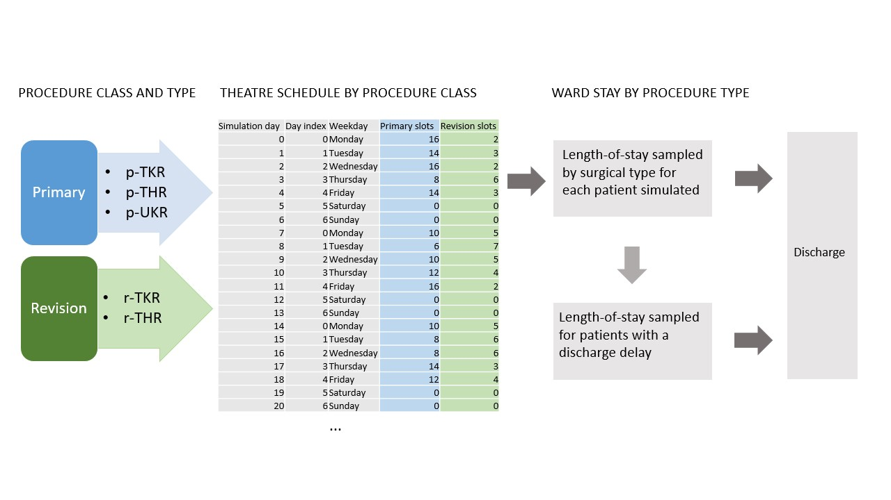

STRESS-DES#
Strengthening the Reporting of Empirical Simulation Studies
A standardised checklist to improve the reporting of discrete-event simulation models: Monks et al. 2019
1.0 Objectives#
1.1 Purpose of the model
The HEP orthopaedic capacity planning model provides a tool for healthcare planners, managers, and clinicians to support capacity and efficiency decisions for orthopaedic services. It includes planning for two classes of surgery:
Primary
Revision;
Within these classes are five surgical types:
Primary total hip replacement
Primary total knee replacement
Primary unicompartmental knee replacement
Revision total hip replacement
Revision total knee replacement
1.2 Model outputs
For each scenario configuration, the model outputs:
(i) Mean bed utilisation per day of runtime; mean bed utilisation per weekday; boxplots of bed utilisation
(ii) Total mean surgical throughput (by surgial type)..
(iii) ‘Lost slots’ which represent a mismatch between demand (patients scheduled for surgery), and capacity (beds available)
1.3 Experimental aims
Alongside other information sources such as workforce availability and costs, the aim is to maximise surgical throughput and minimise ‘lost slots’. This can involve changing the resources (daily number of theatres, number of daily theatre sessions, number of beds). It can also involve efficiency measures such as reducing delays to discharging patients, reducing lengths-of-stay, changing the way surgeries are scheduled across the week (e.g. scheduling more complex surgeries at the start of the week).
2.0 Model logic#
2.1 Base model overview diagram

2.2 Base model logic
Patient arrive into the model deterministically using a pre-defined theatre schedule which allocates surgical classes (primary, revision) across a number of sessions per weekday, and a number of theatres per weekday. These are allocated a surgical type by probability. Each surgical type samples from a probability distribution fitted to historical data. A proportion of patients will have a delay to their discharge, for example waiting for out-of-hospital care. These patients sample from a probability distribution. If there is no bed available for a patient scheduled for surgery, this patient represents a ‘lost slot’.
2.3 Scenario logic
Patients arrive into the model according to a pre-defined theatre schedule. The schedule is an experimental parameter. Per weekday, the number of surgery sessions, the allocation of surgical classes per session, and the number of theatres available can be defined.
Within the model which is made available in streamlit.io, the simulation parameters which can be changed are: number of beds; mean lengths-of-stay per surgical procedure; mean length-of-stay of patients whose discharge is delayed; proportion of patients whose discharge is delayed. Each simulation scenario can be run with the baseline theatre schedule alone, or additionally with a user-defined schedule.
Within the model notebook, additional parameters can be changed. These include: stdev of all lengths of stay; proportions of surgical types; length-of-stay distributions.
2.4 Components
A theatre schedule defines deterministic arrivals by patient class
There are two patient entity types (primary, revision) with six probabilistic categories defining lengths-of-stay (Five procedures, delayed discharges)
A single service node
A single resource: beds
FIFO queue discipline
3.0 Data#
Routinely collected data from North Bristol NHS Trust was used to identify patients receiving elective joint arthroplasty between January 2016 and December 2019.
The Trust’s electronic health records (EHR) were used to identify elective joint arthroplasty using a combination of OPCS4 procedure and surgical site codes. Five core elective orthopedic surgical procedure types were identified and verified. A small number of short day-case ‘hip resurfacing’ surgeries [n=52] were removed from the dataset. The five remaining surgical types were classified into two classes: (I) Primary (primary hip replacement [p-THR n=3057; 51%], primary knee replacement [p-TKR; n=2302; 38%], uni-compartmental knee replacement [p-UKR; n=679; 11%]); (II) Revision (revision hip replacement [r-THR; n=482; 55%], revision knee replacement [r-TKR; n=392; 45%]). Most patients did not remain in hospital once they were medically fit for discharge, however a proportion of patients in the EHR had a recorded medically fit for discharge date which preceded their actual discharge date (n=529; 7.6%).
A statistical probability distribution was fitted to each type of surgical procedure using the EHR data. The fitted length-of-stay parameters [procedure, mean days (u), standard deviation days (sd)] are: p-THR, u=4.4, sd=2.9 days; p-TKR u=4.7 days, sd=2.8; p-UKR u=2.9 days, sd=2.1; r-THR, u=6.9, sd=7.0; r-TKR, u=7.2, sd=7.6; delayed discharge, u=16.5; sd=15.1).
4.0 Experimentation#
4.1 Initialisation
The model uses a warm-up period of 35 days based on visual inspection of outputs. The model is non-terminating.
4.2 Run Length
The model runs for 70 days. This can be changed by the user. Multiple independent replications are undertaken to control confidence intervals. The number of replications is determined using MORE plots, and is set to 50 by default.
5.0 Implementation#
5.1 Software of programming language
The simulation was developed using Python 3.8. A conda software environment is used to manage versions on a local machine. Software versions are:
- jupyterlab=3.4.6
- jupyterlab-spellchecker=0.7.2
- matplotlib=3.5.3
- numpy=1.23.2
- pandas=1.4.4
- pip=22.2.2
- python=3.8.12
- scipy=1.9.1
- simpy=4.0.1
- streamlit==1.17.0
5.2 Random sampling
All sampling uses numpy.random.Generator. Common random number streams are used in the model, created through seed vectors (one seed for each activity in each replication).
5.3 Model execution Simpy implements a process-based simulation worldview.
5.4 System specification The model was run on Intel i7-12700H CPU with 32GB RAM running Pop!_OS 22.04 Linux.
Code access#
Simulation model code, streamlit code, and Jupyter book is available at the main branch of GitHub repo: AliHarp/HEP